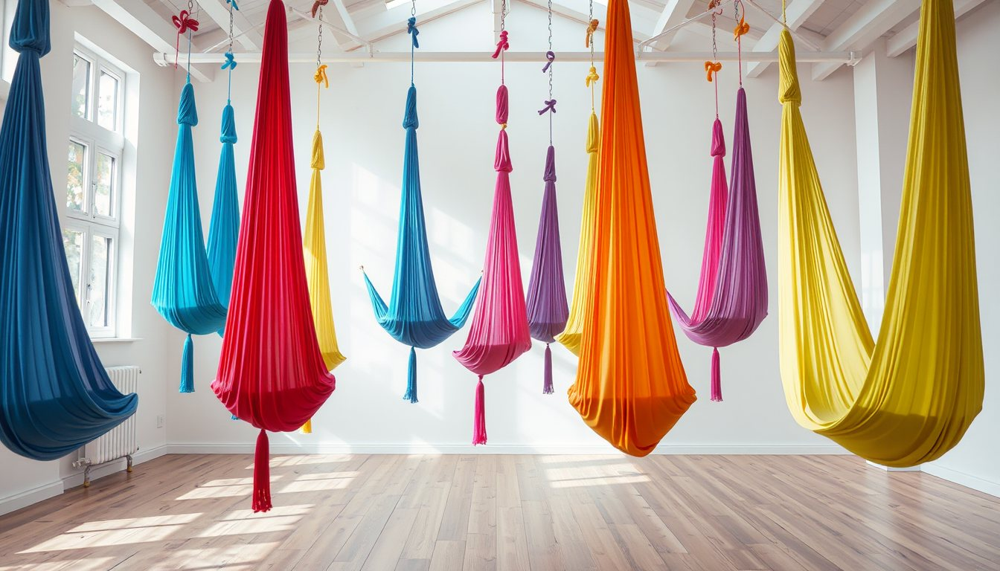
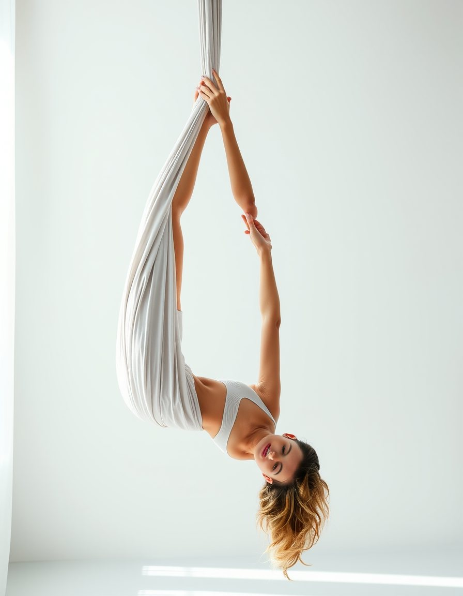
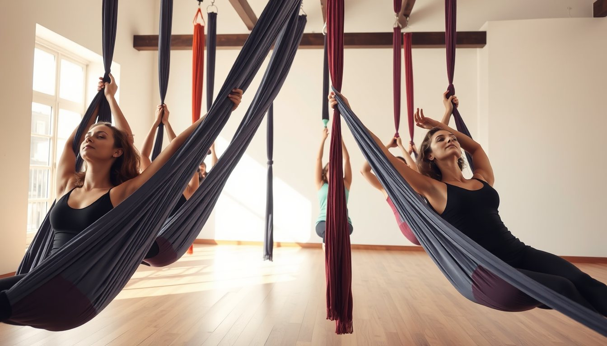
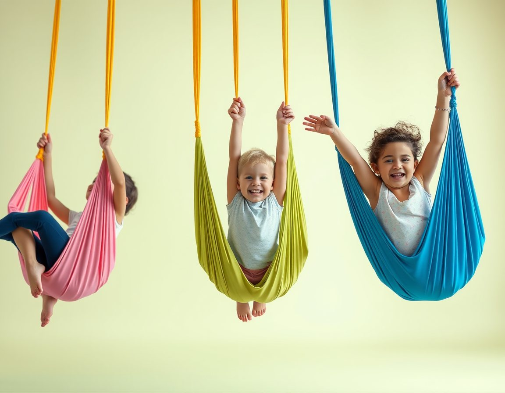
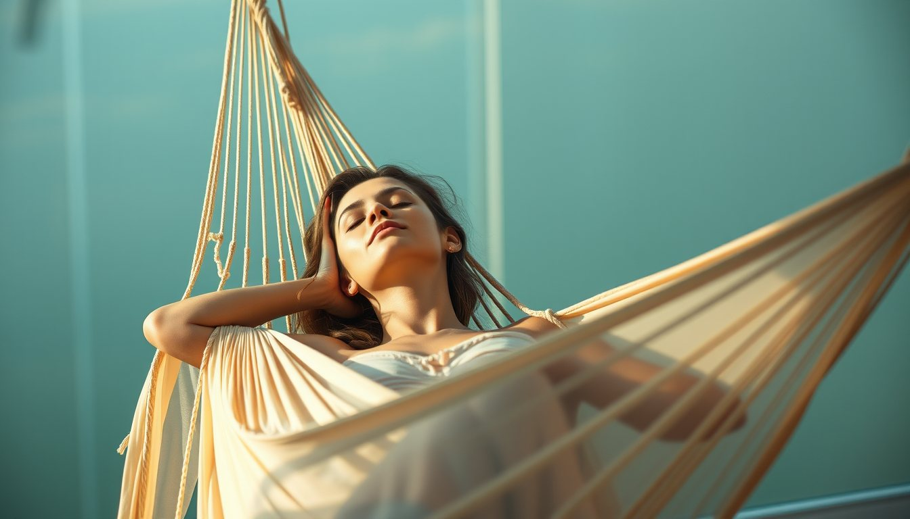
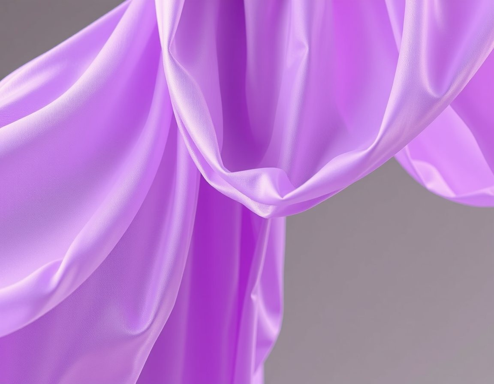

Aerial yoga
Ters duruşlar ve destekli esnemeler.
60 dkTüm seviyeler

İpek hamakta yoga ve pilates. Omurga rahatlar, bedeniniz hafifler; ilk derste bile.
Tüm derslerde hamak yüksekliği kişiye göre ayarlanır. Sınıflar en fazla 6 kişi.

Ters duruşlar ve destekli esnemeler.

Core ve duruş, hamak direnciyle.

6–12 yaş; denge, cesaret, oyun.

Sallanan kozada rehberli nefes.
Daha önce yoga ya da pilates yaptınız mı?
En çok neye ihtiyacınız var?
Ters durmak sizi nasıl hissettirir?
Yavaş bir başlangıç: hamağa alışır, nefesle rahatlarsınız. İkinci derste aerial yogaya geçebilirsiniz.
Bu dersi seç
Her cuma 20:00'de mum ışığında ses banyosu eşliğinde kozada meditasyon. 8 kişilik.
Tayt ve kolları kapatan bir üst giyin; takı ve saat takmayın. İlk dersten 2 saat önce ağır yemek yemeyin.
İlk ders 450 ₺